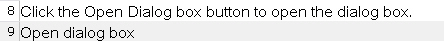
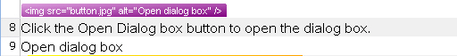

Handling Tags During Segmentation
Learn how to process tags that appear at the beginning or end of a segment.
Change the Way Segmentation Treats Tags
Tags such as IMG may appear at the front or after a segment. When a tag is leading or trailing, you should display as few tags as possible to keep the editor view clean. By default, Trados Studio hides leading and trailing tags in the editor, but displays the segment content.
For example, this leading IMG tag would not display in the editor view, but the sub-segment content would:
<img src="button.jpg" alt="Open dialog box" /> Click the Open Dialog box button to open the dialog box.
Output in the Trados Studio editor:

To display all content, select All content from the Display dropdown list. The leading tag then appears in a separate row:

You can change this default behavior using the SegmentationHint property on the placeable properties object. By default, this property is set to Undefined, which applies the default segmentation behavior: leading and trailing tags remain hidden. Trados Studio minimizes tag display to be more translator-friendly.
Set the segmentation hint property to Include to ensure tags display in the same segment as the text: